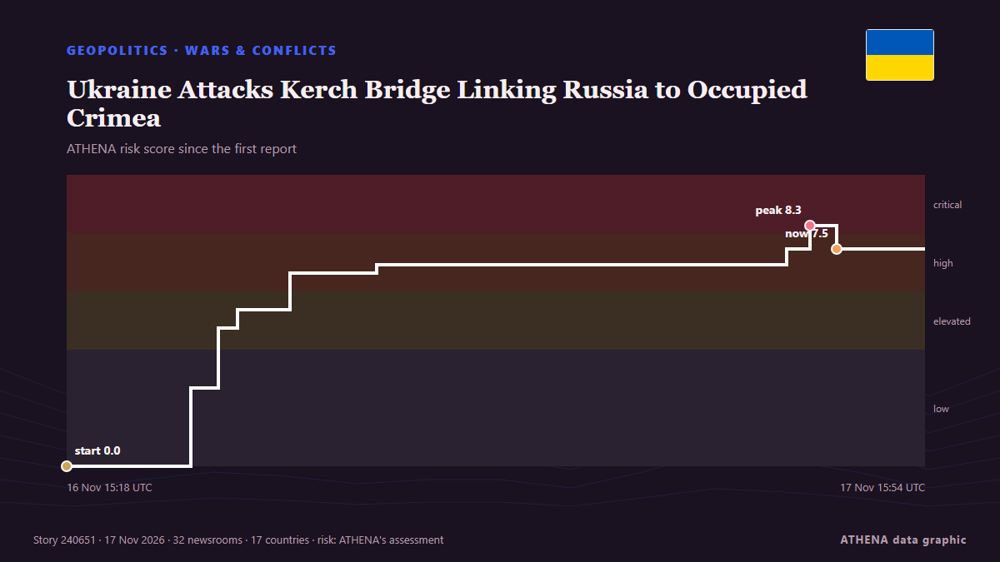

Ukraine Attacks Kerch Bridge Linking Russia to Occupied Crimea

Destroying the structure, the only one connecting Russia to the occupied Crimean Peninsula, has long been a top objective for Kyiv. από The New York Times (World)
Αναφέρθηκε ανεξάρτητα από 33 μέσα σε 18 χώρες από τις 16 Νοε, πρώτο το Business Recorder· η κάλυψη εξασθενεί. Το ATHENA εκτιμά τον κίνδυνο υψηλό (7.2/10), κυρίως λόγω της σοβαρότητάς του και της εμβέλειάς του. Βεβαιότητα 89% (υψηλή): το επιβεβαιώνουν 33 ανεξάρτητα μέσα, μέση αξιοπιστία 78%. Μέσα ανά χώρα: Ρωσία (7), Ηνωμένο Βασίλειο (6), Ηνωμένες Πολιτείες (6). Κάλυψη: 16 Νοε έως 17 Νοε, 29 ώρες.
Γιατί έχει σημασία: Η πλήρους κλίμακας εισβολή της Ρωσίας στην Ουκρανία ξεκίνησε τον Φεβρουάριο του 2022. Η σελίδα παρακολουθεί τις μάχες, τα πλήγματα σε υποδομές και τη διπλωματία γύρω από τον πόλεμο, όπως τα καλύπτουν μέσα από όλο τον κόσμο.
Τι άλλαξε: 39 νέες αναφορές από 30 μέσα στο 24ωρο έως 17 Νοε.
Πρώτη διατύπωση: Ukraine hits Kerch bridge between Russia and occupied Crimea
ΑυτοματοποιημένοΕπιλέχθηκε, ομαδοποιήθηκε και βαθμολογήθηκε με τη δημοσιευμένη μέθοδο της ATHENA από 31 ανεξάρτητα μέσα. Ο τίτλος είναι του μέσου· οι προτάσεις της ATHENA ακολουθούν σταθερά πρότυπα - δεν τις γράφει παραγωγική ΤΝ. Πώς λειτουργεί →
Πώς να διαβάσετε αυτή τη σελίδα
- Τι διαβάζετε
- 33 μέσα σε 18 χώρες ανέφεραν αυτό το γεγονός. Οι αναφορές παρακάτω εμφανίζονται με τη σειρά που δημοσιεύτηκαν· κάθε τίτλος ανοίγει το αρχικό άρθρο. Το ATHENA δεν γράφει δικά του ρεπορτάζ.
- Η εκτίμησή μας
- Υπό παρακολούθηση — Οι αναφορές περιγράφουν ενέργεια ή απόφαση που δεν έχει ακόμη ληφθεί, ανάμεσα σε κράτη ή ένοπλες ομάδες. Το ATHENA παρακολουθεί τι θα συμβεί στη συνέχεια. Αναζητούμε τέσσερα είδη εξέλιξης: καμία περαιτέρω ενέργεια, μια ανοιχτή ενέργεια που κάποιος αναλαμβάνει, μια ενέργεια μέσω τρίτων ή χωρίς ανάληψη ευθύνης, και ένα ατύχημα ή μια παρεξήγηση. Δεν προβλέπουμε ποιο θα συμβεί.
- Πόσα στοιχεία υπάρχουν
- Ισχυρή Πολλά ανεξάρτητα μέσα σε πολλές χώρες περιγράφουν το ίδιο γεγονός.
Αφού αφαιρεθούν οι επαναλήψεις, τα άσχετα και τα παλιά στοιχεία, υπολογίζονται 31 από τις 40 αναφορές που παρατίθενται· το 100% των τίτλων αντιστοιχεί στο γεγονός.
- Τι δεν σημαίνει
- Το ATHENA μετρά πώς καλύπτεται ένα γεγονός, όχι αν είναι αληθές. Δεν είναι πρόβλεψη, κρίση για το ποιος έχει δίκιο ή συμβουλή.
- Τι θα την άλλαζε
- Αναφορές από άλλα ανεξάρτητα μέσα που δείχνουν διαφορετική εξέλιξη, ή σαφής επιβεβαίωση ή διάψευση από επίσημη πηγή.
Εκτίμηση R2 · ανανεώνεται με κάθε ενημέρωση της σελίδας. Το ATHENA δεν έχει δημοσιεύσει ακόμη ιστορικό επιδόσεων για αυτές τις εκτιμήσεις· όταν το κάνει, θα συνδέεται εδώ.
Με μια ματιά
Επιλέγεται, βαθμολογείται και γράφεται από τη δημοσιευμένη μεθοδολογία του ATHENA. Κανένας συντάκτης δεν παρεμβαίνει σε μεμονωμένα γεγονότα. Πώς παράγεται ›
| 16 Nov 10:48 UTC | 2 |
|---|---|
| 16 Nov 12:48 UTC | 0 |
| 16 Nov 14:48 UTC | 2 |
| 16 Nov 16:48 UTC | 4 |
| 16 Nov 18:48 UTC | 3 |
| 16 Nov 20:48 UTC | 1 |
| 16 Nov 22:48 UTC | 2 |
| 17 Nov 00:48 UTC | 2 |
| 17 Nov 02:48 UTC | 1 |
| 17 Nov 04:48 UTC | 4 |
| 17 Nov 06:48 UTC | 9 |
| 17 Nov 08:48 UTC | 7 |
| 17 Nov 10:48 UTC | 4 |
| 17 Nov 12:48 UTC | 0 |
| 17 Nov 14:48 UTC | 2 |
| 16 Nov 15:18 UTC | 0.0 |
|---|---|
| 16 Nov 18:51 UTC | 2.7 |
| 16 Nov 19:38 UTC | 4.7 |
| 16 Nov 20:12 UTC | 5.4 |
| 16 Nov 21:42 UTC | 6.6 |
| 17 Nov 00:10 UTC | 6.9 |
| 17 Nov 11:56 UTC | 7.5 |
| 17 Nov 12:36 UTC | 8.3 |
| 17 Nov 13:22 UTC | 7.5 |
| 17 Nov 15:54 UTC | 7.2 |
Γιατί αυτοί οι αριθμοί
Σημασία
Κίνδυνος
Βεβαιότητα
Η κάλυψη — ποιος το ανέφερε και πότε
ο τίτλος όπως δημοσιεύτηκε · ανοίγει το πρωτότυπο- Business Recorder · ΠακιστάνUkraine hits bridge linking Russia and Crimea, Kremlin says damage is 'minor'
- The Guardian · Ηνωμένο ΒασίλειοUkraine hits Kerch bridge between Russia and occupied Crimea
- BBC News · Ηνωμένο ΒασίλειοLandmark Crimea bridge hit as Russia reports biggest Ukrainian drone attack of war
- Meduza (English) · ΡωσίαUkrainian drone attack damages Crimea Bridge, shutting down road traffic for hours. Kremlin says damage is ‘minor.’
- EUobserver · ΒέλγιοUkraine damages Crimean Bridge, drones likely hit arch (Ukraine Battlefield update, Day 1,726)
- Fox News (World) · Ηνωμένες ΠολιτείεςUkraine hits Putin's prized bridge in record drone blitz as Kremlin tells lawmakers to prepare for 'victory'
- Global News (World) · ΚαναδάςUkraine strikes bridge connecting Russia to Crimea, causing ‘minor’ damage
- The War Zone · Ηνωμένες ΠολιτείεςRussia’s Prized Kerch Bridge Struck In Ukrainian Drone Onslaught (Updated)
- Kyiv Independent · ΟυκρανίαUkraine war latest: Crimean Bridge hit in reported attack, traffic restrictions imposed
- The National Interest · Ηνωμένες ΠολιτείεςUkraine Just Launched a Massive Airstrike on Kerch Bridge
- The Independent · Ηνωμένο ΒασίλειοUkraine hits Crimea Bridge halting traffic on key crossing to Russia
- Ukrainska Pravda (English) · ΟυκρανίαCrimean Bridge attacked again – photo, video
- TASS (English) · ΡωσίαUkrainian forces attack Crimean Bridge again — Head of the Republic of Crimea
- France 24 English · ΓαλλίαUkraine hits key Crimea bridge with drones
- DW English · ΓερμανίαUkraine updates: Key bridges in Kyiv, Crimea hit in strikes
- The Independent · Ηνωμένο ΒασίλειοUkraine hits Crimea Bridge halting traffic on key crossing to Russia
- RTÉ News (World) · ΙρλανδίαUkraine strikes Crimea bridge in 'unprecedented' attack
- Meduza (English) · ΡωσίαUkrainian monitoring channels claim missile strike sends Crimea bridge road arch into the water
- APA (English) · ΑζερμπαϊτζάνTwo killed in Ukrainian drone attack on Crimea
- Kyiv Post · ΟυκρανίαCrimean Bridge Arch Collapses Into Sea After Fresh Ukrainian Missile Strike
- APA (English) · ΑζερμπαϊτζάνUkraine strikes Crimean Bridge with Flamingo missile, one of bridge's arches collapses - UPDATED - VIDEO
- The Straits Times · ΣιγκαπούρηRussia says Ukraine struck its bridge to Crimea for second day in biggest drone attack of war
- Israel Hayom (English) · ΙσραήλMajor blow to Putin as Ukrainian strike brings down part of Crimean Bridge
- The Guardian · Ηνωμένο ΒασίλειοUkraine critically damages Kerch bridge linking occupied Crimea with Russia
- Arab News · Σαουδική ΑραβίαRussian govt to hold emergency talks after Crimea bridge attack: state media
- Egypt Independent · ΑίγυπτοςCritical bridges in Crimea and Kyiv damaged as Russia and Ukraine exchange large-scale attacks
- Baltic News Network · ΛετονίαVIDEO | One of the Crimean Bridge's arches collapses following drone strike
- The Moscow Times · ΡωσίαUkraine Strikes Crimean Bridge for Second Day as Russia Pounds Kyiv Bridges
- Meduza (English) · ΡωσίαUkraine strikes Crimea bridge for second time in two days, sending an arch crashing into the water and halting traffic
- The National · Ηνωμένα Αραβικά ΕμιράταUkraine and Russia attack key bridges ahead of China talks
- Politico Europe · ΒέλγιοUkraine strikes Crimean bridge in ‘unprecedented operation,’ Zelenskyy says
- RFE/RL (English) · INTCrimea Bridge Critically Damaged As Ukraine, Russia Exchange Strikes
- TASS (English) · ΡωσίαUkrainian drone attack kills two in Crimea
- Kyiv Post · ΟυκρανίαFrom Flamingo to Neptune: Zelensky Reveals Details of Crimea Bridge Strike
- NPR World · Ηνωμένες ΠολιτείεςUkraine strikes major Russian bridge with drones and missiles as aerial attacks escalate
- Belfast Telegraph · Ηνωμένο ΒασίλειοRussian air defences down more than 1,400 drones as Kyiv hits key Crimean bridge
- Meduza (English) · ΡωσίαZelensky calls Crimea bridge strike an ‘unprecedented operation,’ says Ukraine used Neptune and Flamingo missiles
- CNBC World · Ηνωμένες ΠολιτείεςUkraine damages Putin’s prized Crimea bridge as Zelenskyy lauds ‘unprecedented operation’
- The Straits Times · ΣιγκαπούρηZelenskiy says Ukraine struck Crimea bridge in response to Russian attacks on infrastructure
- The New York Times (World) · Ηνωμένες ΠολιτείεςUkraine Attacks Kerch Bridge Linking Russia to Occupied Crimea